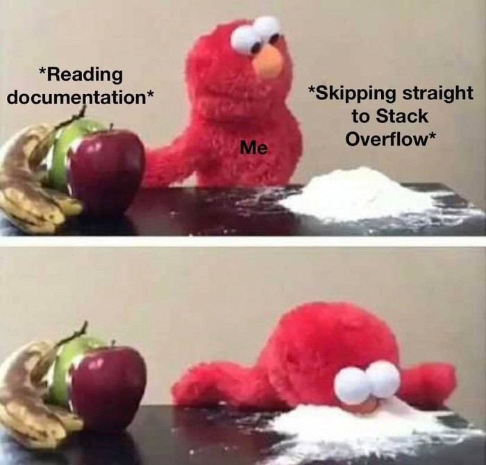
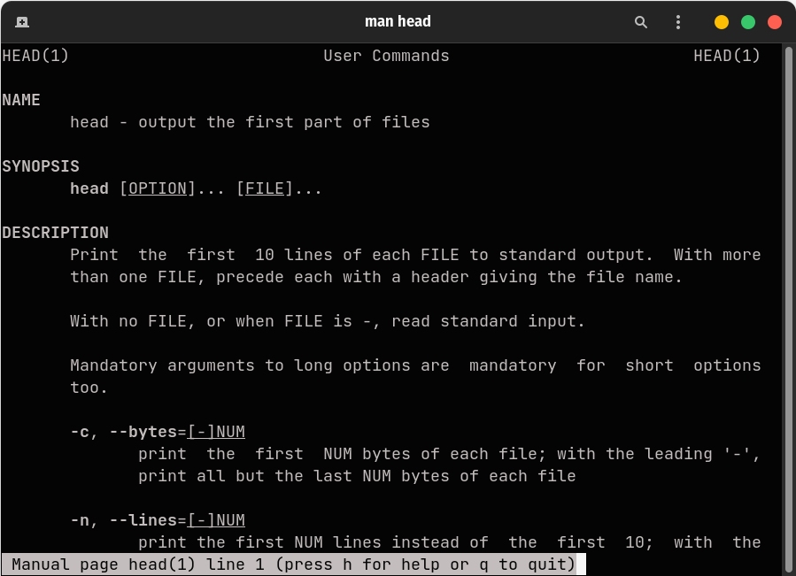
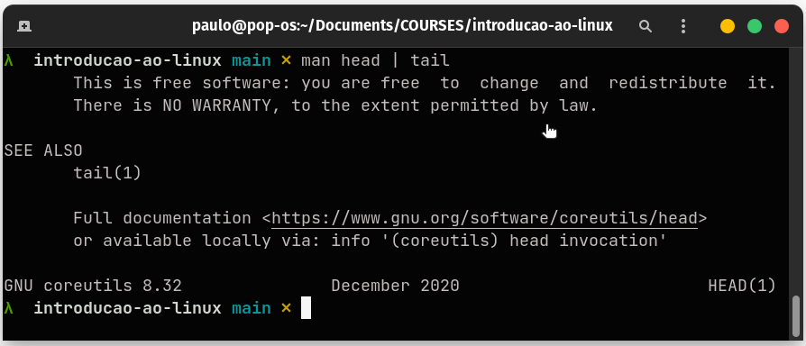

Terminal
Embora o Linux tenha ganhado seu espaço no mercado dos computadores pessoais nas últimas décadas graças a distribuições cada vez mais simples e bem desenvolvidas, o seu uso em servidores é aonde o sistema mostra de fato sua robustez e confiabilidade.
Com o barateamento dos custos de produção, ainda que servidores hoje sejam muito mais potentes custando bem menos que há algumas décadas, encontrar uma interface gráfica (GUI) rodando em um sistema Linux em um servidor não é tão comum. O motivo é que servidores são projetados para tarefas que exigem grande custo computacional, sendo assim, toda economia de recursos é importante, e uma interface gráfica apenas consumiria recursos de memória e espaço em disco que poderiam ser alocados para outros processos.
Por esse motivo, conhecer os comandos básicos do terminal do Linux é essencial na hora de utilizar o sistema sem uma interface gráfica. Navegar em diretórios, criar e editar arquivos, utilizar linguagens de script para otimizar e automatizar rotinas repetitivas são algumas das habilidades necessárias para qualquer Cientista de Dados hoje em dia.
Toda entrada em um terminal possui três elementos básicos:
Comando: nome do programa a ser executado
Opções: geralmente iniciam com um ou dois traços (dashes) pra diferenciar dos argumentos
Argumentos: objeto no qual o comando vai realizar operações e retornar um resultado
Read the Freaking Manual!
Uma das características mais impressionantes da comunidade de desenvolvimento open source talvez seja a enorme preocupação com a documentação. Um hábito que precisa ser exercitado é recorrer a documentação de pacotes, funções e programas, evitando assim desgaste desnecessário e se familiarizando com boas práticas de programação.

O Linux possui uma vasta documentação das suas funções, as famosas man pages de manual pages. Basta digitar no terminal man seguido do nome da função para a qual deseja a documentação.

headAlgumas funções úteis
head exibe o início de um arquivo, as 10 primeiras linhas por padrão.
tail exibe o final de um arquivo, as 10 últimas linhas por padrão.
É possível utilizar o resultado de um comando como entrada para um outro, isso é feito através do operador pipe |. Quem já tem familiaridade com o tidyverse do R conhece a filosofia, o resultado de um comando/função é conectado a outra função.

headsudo
Alguns comandos necessitam ser executados ao nível de superusuário do sistema (root). O comando sudo quando utilizado antes de algum comando/função informa ao sistema que esta deve ser executada com privilégios de administrador. Nesse momento a senha de usuário é requisitada, basta informar a senha e pressionar Enter e o comando é executado.
Por padrão, uma sessão sudo dura 15 minutos. Isso significa que após ter executado um comando como sudo informando sua senha, qualquer outro comando executado com sudodentro dos próximos 15 minutos não irá requisitar que o usuário informe a senha novamente.
Uma outra maneira de executar comandos como admin é utilizar o comando sudo su. O comando su (substitute user) é utilizado para alternar entre usuários de um sistema. Utilizado em conjunto com sudo o usuário é trocado para o root, o superusuário do sistema e continuará assim até ser alterado novamente, seja utilizando su ou simplesmente digitando exit no terminal, retornando assim ao usuário padrão do sistema.
É preciso cautela na hora de alterar o usuário que executará um comando. Embora seja comum utilizarmos o sudo para executar tarefas rotineiras, utilizar o terminal no modo superusuário com sudo su pode causar danos ao sistema de arquivos ao rodar comandos indesejados.